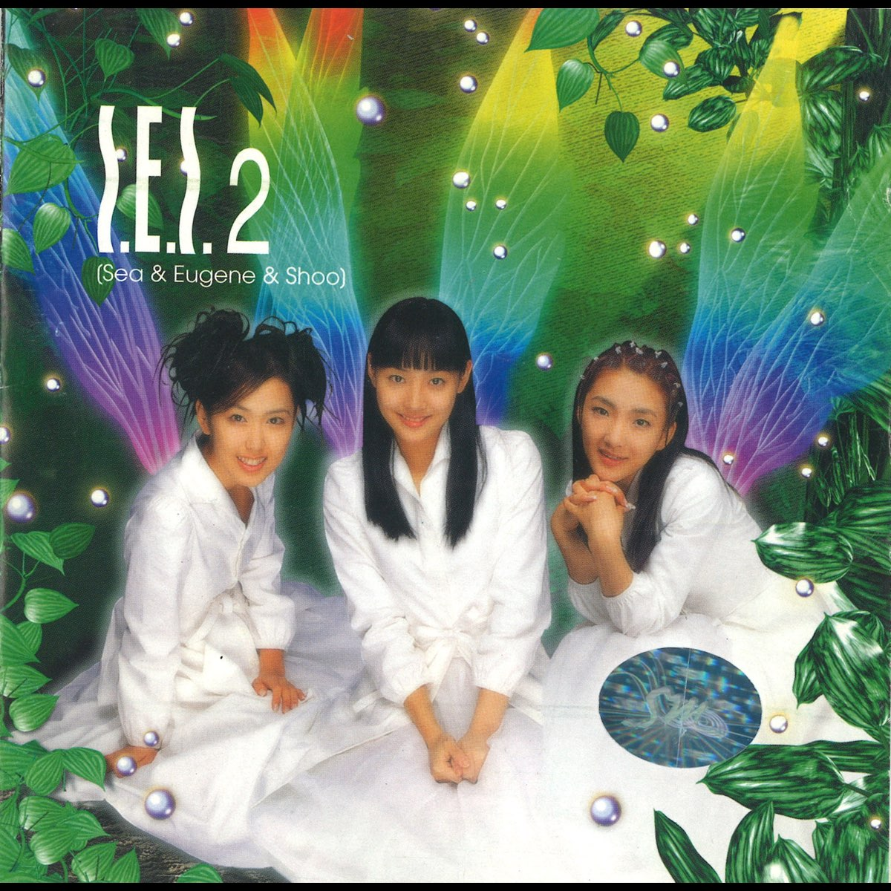
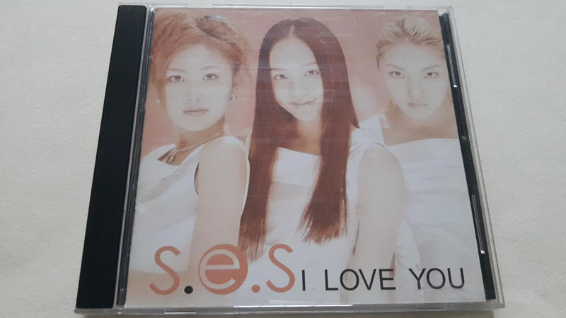
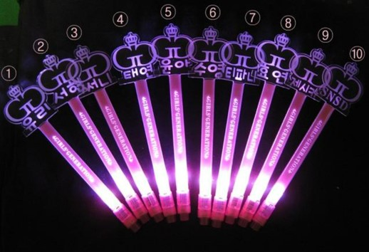
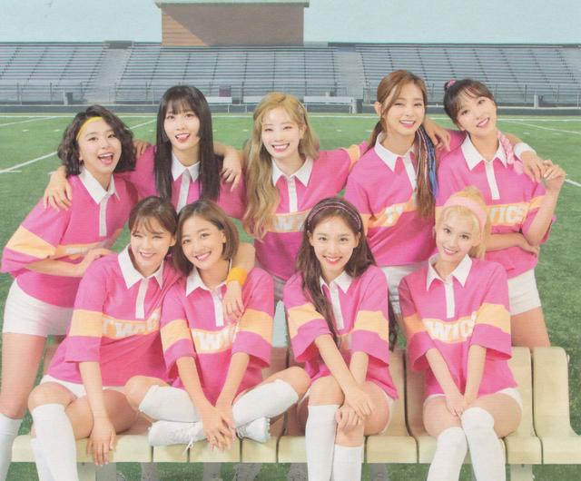

什麼是韓流白皮書？
《韓流白皮書》旨在按照國家地區識別韓國的內容消費者的韓流感知跟趨勢和韓流消費行為，分代的區分標準為「銷量」、 「音源」 、 「YouTube」三方面的要超過上一代，且男團女團要同時超過，才會換代 。
原則：
1. 單次回歸下，各項成績都要超過上一代的頂，少一項都不行
2. 男女團都要超過，才會公布
3. 因為是政府的大外宣，還需考量在海外有什麼貢獻
4. 登頂代表是每年成績最好，可能很多團都登上過。但換代是指一個代的代表，非常珍貴，標準也較高
《韓流白皮書》旨在按照國家地區識別韓國的內容消費者的韓流感知跟趨勢和韓流消費行為，分代的區分標準為「銷量」、 「音源」 、 「YouTube」三方面的要超過上一代，且男團女團要同時超過，才會換代 。
1. 單次回歸下，各項成績都要超過上一代的頂，少一項都不行
2. 男女團都要超過，才會公布
3. 因為是政府的大外宣，還需考量在海外有什麼貢獻
4. 登頂代表是每年成績最好，可能很多團都登上過。但換代是指一個代的代表，非常珍貴，標準也較高
男團：H.O.T. / 女團：S.E.S.（依照順序顯示於下方圖片）
 男團：BIGBANG / 女團：少女時代（依照順序顯示於下方圖片）

男團：BTS
1. 登上雜誌封面造成全球搶購潮
2. 二度獲邀參加美國葛萊美頒獎典禮
3. 2020年《Dynamite》短短24小時內就突破1億次點閱
（依照順序顯示於下方圖片）

女團：TWICE
從《cheer up》《TT》的大爆，在2016年到2018年，連續三年MAMA年度歌曲，再加上有大賞和韓國政府白皮書認證。被日本紅白歌會邀請以及唯一能和現役男團PK而且還能打贏的女團。
1. 綜藝投票出道，produce節目出現前，打響知名度。
2. 出道不含糊，從生存戰到出道只用了5個月。
3. 擁有自己的定位與風格。絕對的穩紮穩打，在穩固人氣的同時，慢慢打造屬於自己的標籤。
（依照順序顯示於下方圖片）
